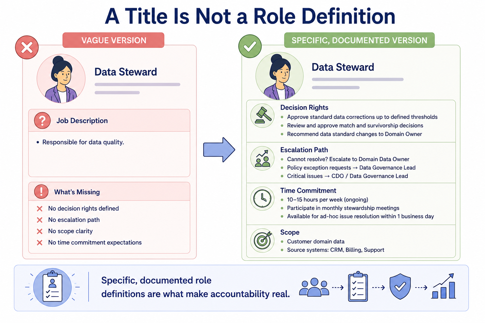
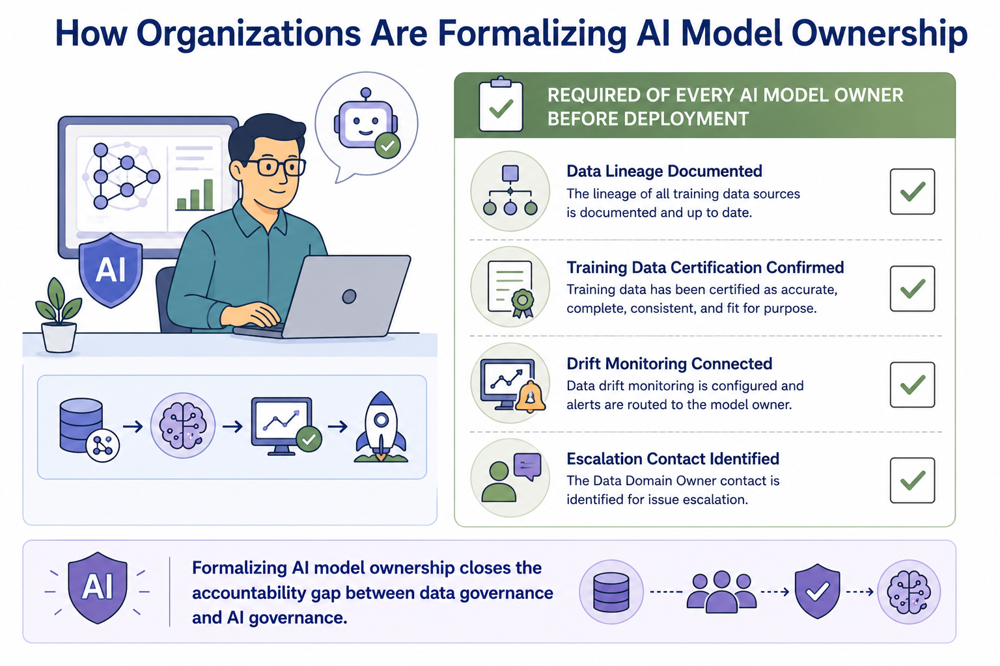
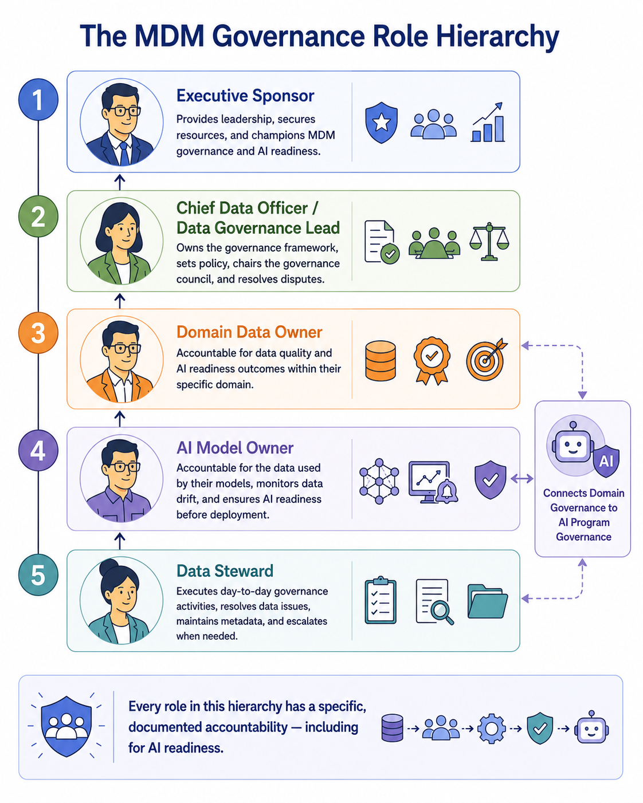

Roles and Responsibilities
Module support notes
Why Role Clarity Requires More Than a Title
Many MDM programs assign governance titles — data steward, domain owner — without documenting the specific decision rights, escalation paths, and time commitments that come with them. A title alone does not create accountability. Organizations that document roles with the same specificity as a RACI matrix entry see far fewer disputes about who should act when a problem arises.
A well-defined governance role answers three questions explicitly: what decisions am I authorized to make without escalating? Who do I escalate to when a decision is outside my authority? And how much of my time is this role expected to require each week or month?
Tip
When defining governance roles, document decision rights, escalation paths, and time commitment expectations explicitly — not just the title and a vague scope statement. A data steward who knows they are authorized to resolve field-level conflicts within their domain, but must escalate cross-domain conflicts to the domain council, will act with confidence. One who is simply told they are "responsible for data quality" will hesitate every time a decision has any ambiguity.

The Emerging AI Model Owner Role in Practice
Historically, AI model owners were accountable for model performance but not formally connected to the data governance structure that produced their training data. Organizations addressing this gap require model owners to complete a governance checklist before deployment — confirming data certification, documenting lineage, and establishing a direct relationship with the relevant domain data owner.
This closes an accountability gap that has caused real governance failures when AI models underperform due to data issues nobody was formally responsible for catching. Formalizing AI model ownership creates a direct line between AI program governance and MDM data governance — so that when a model fails, there is always a documented owner of both the model and the data it depends on.
Warning
If your organization has AI models in production but no formal AI model owner role connected to the MDM governance structure, you have an accountability gap. When those models underperform due to data quality issues, the question of who is responsible — the model team, the data team, or the domain owner — will produce conflict rather than resolution. Define and document the AI model owner role before the first model goes live, not after the first failure.

Every role in the MDM governance hierarchy has a specific, documented accountability — including for AI readiness. The AI model owner role is what connects that hierarchy to the AI program.
